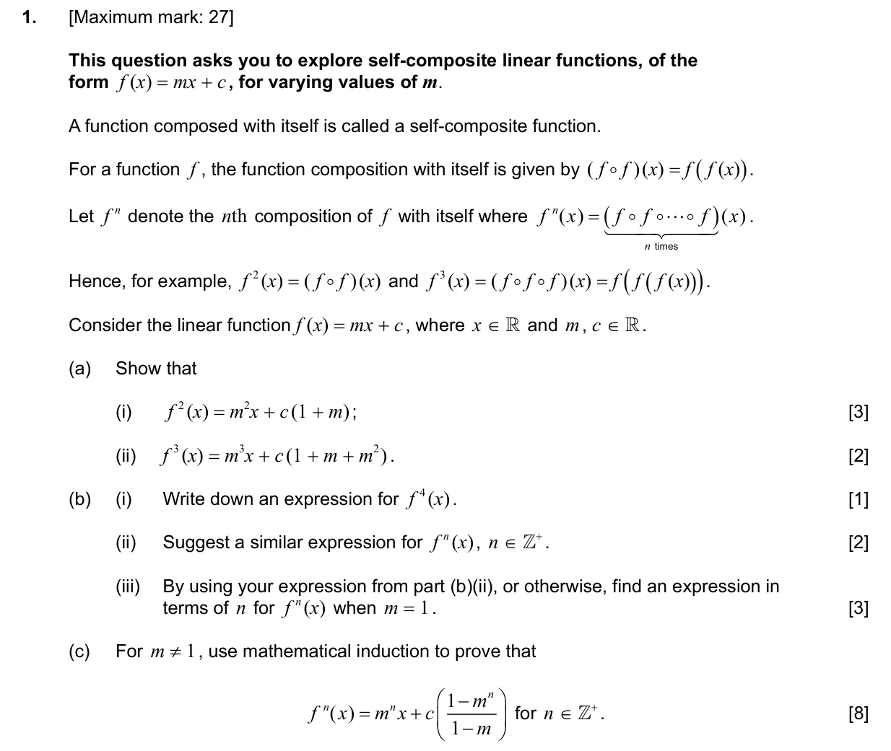
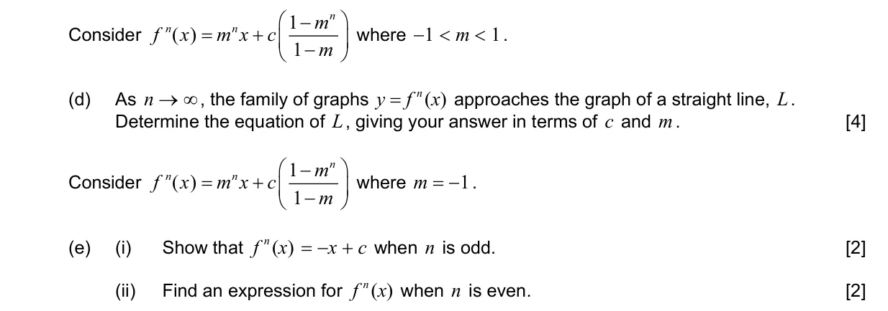
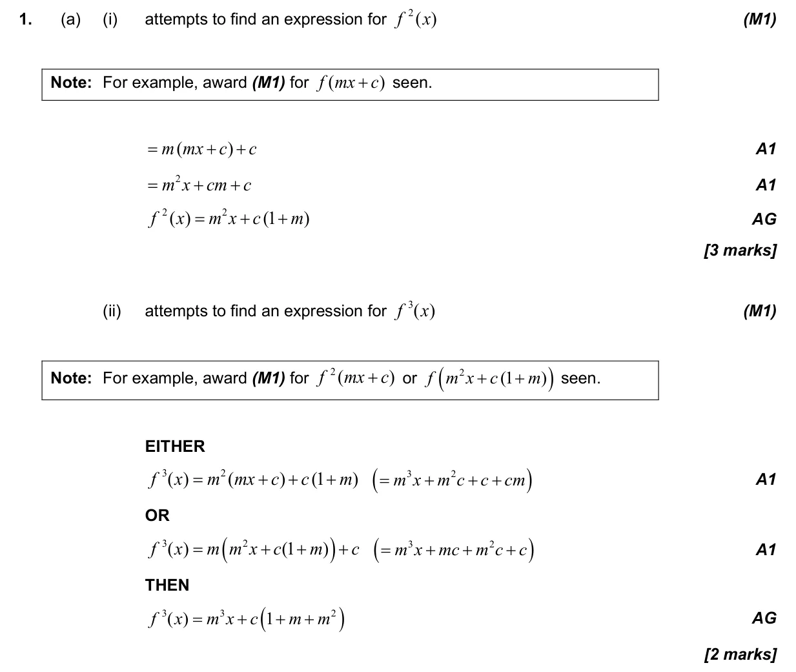
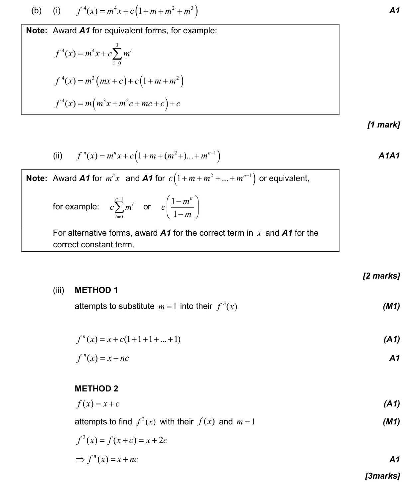
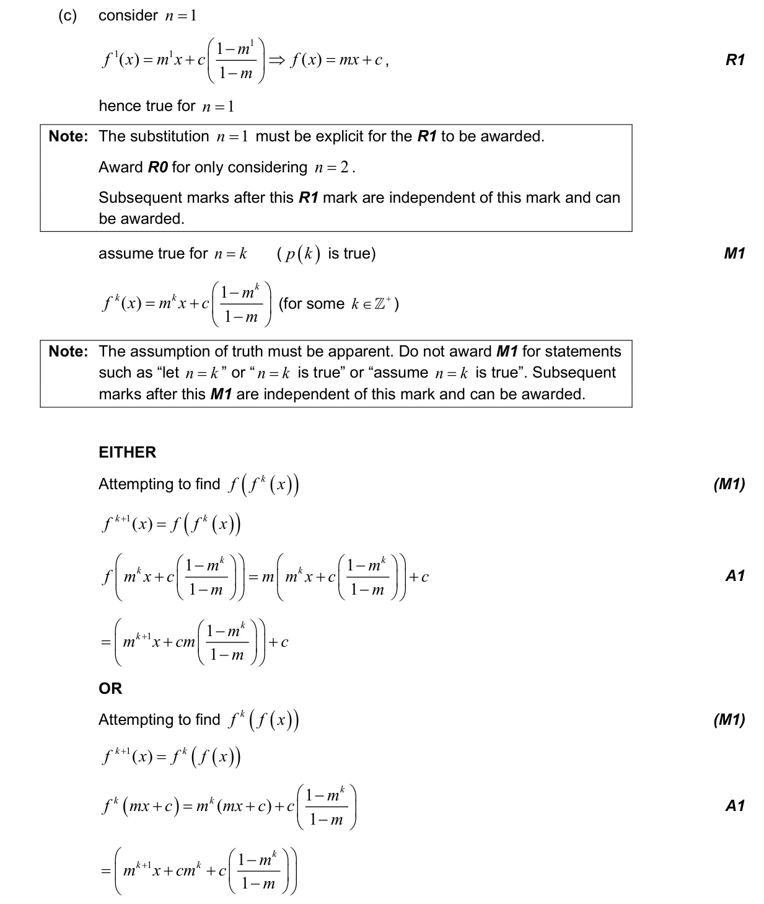
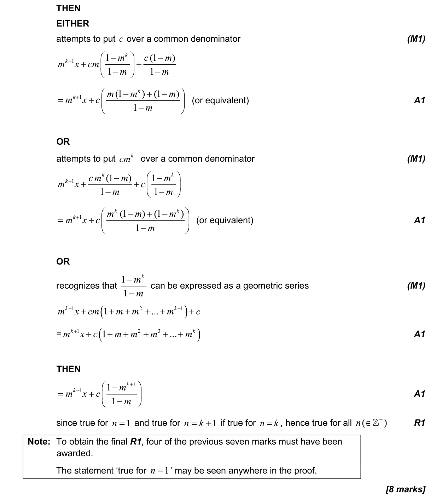
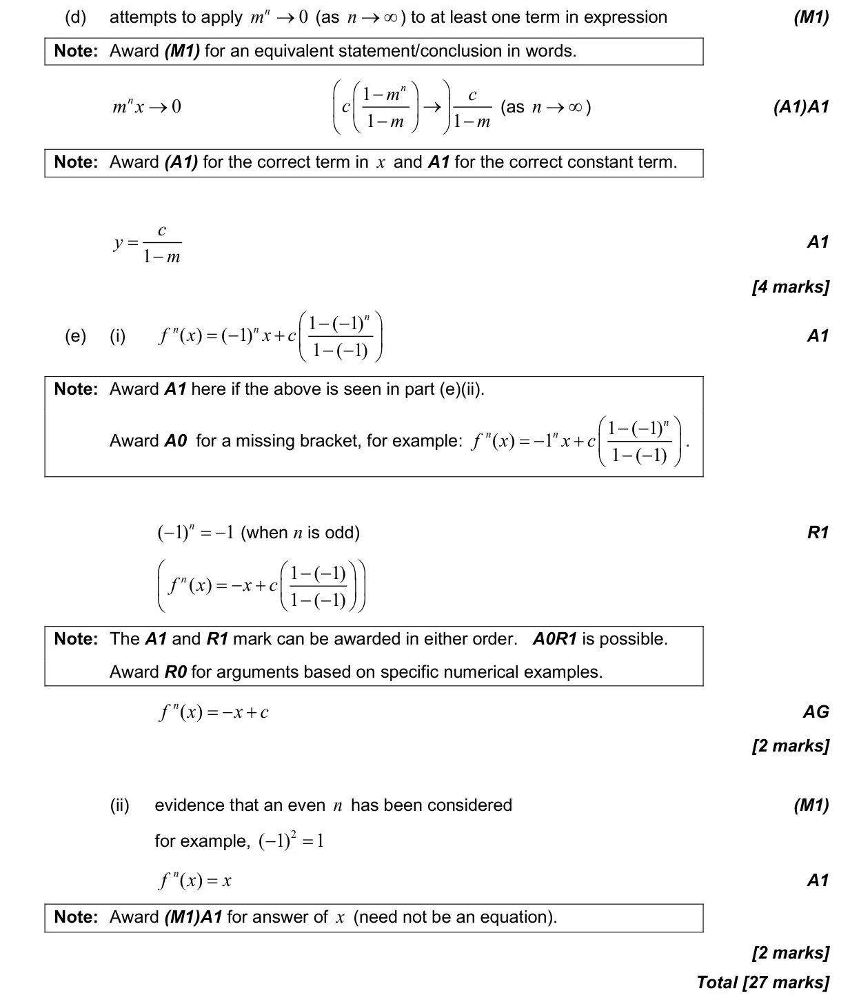

2.5 Composite functions, identity and finding inverse1.15 Proof by induction, by contradiction and by counterexample1.8 Sum of infinite geometric sequences5.12 Continuity, differentiability, limits and differentiation from first principles1.5 Laws of exponents with integer exponents and introduction to logarithms1.3 Geometric sequences and series
Question


Markscheme




